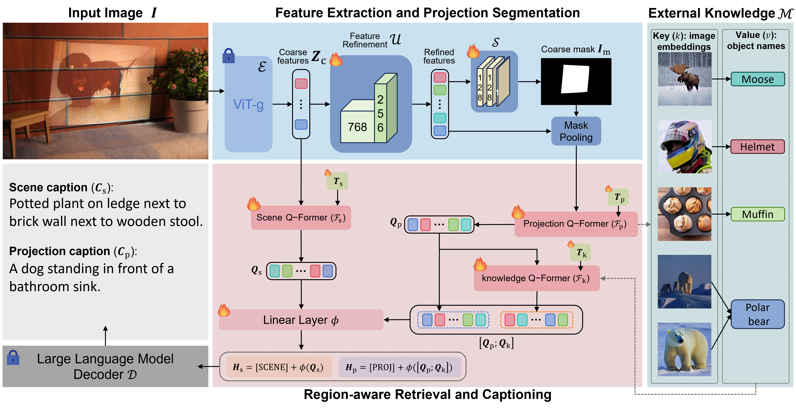
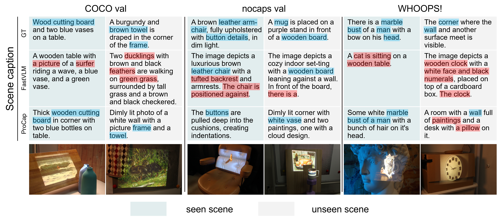
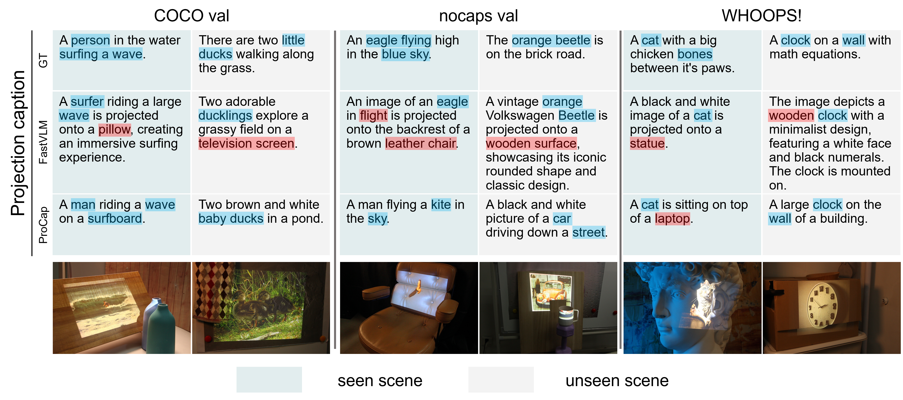

Spatial augmented reality (SAR) directly projects digital content onto physical scenes using projectors, creating immersive experience without head-mounted displays. However, for SAR to support intelligent interaction, such as reasoning about the scene or answering user queries, it must semantically distinguish between the physical scene and the projected content. Standard Vision Language Models (VLMs) struggle with this virtual-physical ambiguity, often confusing the two contexts. To address this issue, we introduce ProCap, a novel framework that explicitly decouples projected content from physical scenes. ProCap employs a two-stage pipeline: first it visually isolates virtual and physical layers via automated segmentation; then it uses region-aware retrieval to avoid ambiguous semantic context due to projection distortion. To support this, we present RGBP (RGB + Projections), the first large-scale SAR semantic benchmark dataset, featuring 65 diverse physical scenes and over 180,000 projections with dense, decoupled annotations. Finally, we establish a dual-captioning evaluation protocol using task-specific tokens to assess physical scene and projection descriptions independently. Our experiments show that ProCap provides a robust semantic foundation for future SAR research.

Overview of the proposed ProCap architecture. Given an observed image $I$ containing both physical scene and projected content, a frozen vision transformer (ViT-g) backbone first extracts coarse features $\boldsymbol{Z}_\text{c}$, which are refined into $\mathcal{U}(\boldsymbol{Z}_\text{c})$ by a feature refinement module $\mathcal{U}(\cdot)$. A projection segmentation module $\mathcal{S}$ is employed to estimate a coarse projection mask $I_\text{m}$, enabling mask pooling to retain projection features as $\boldsymbol{Z}_\text{p}$. The scene and projection features $\boldsymbol{Z}_\text{c}$ and $\boldsymbol{Z}_\text{p}$ are then processed by two specialized Q-Formers: a scene Q-Former and a projection Q-Former to obtain scene embeddings $\boldsymbol{Q}_\text{s}$ and projection embeddings $\boldsymbol{Q}_\text{p}$, respectively. $\boldsymbol{Q}_\text{p}$ is further used to retrieve similar object names (semantic context) $\boldsymbol{N}$ from external semantic knowledge base $\mathcal{M}$. The retrieved semantic context and $\boldsymbol{Q}_\text{p}$ together are then encoded by a knowledge Q-Former as $\boldsymbol{Q}_\text{k}$. Finally, the scene embeddings $\boldsymbol{Q}_\text{s}$, projection embeddings $\boldsymbol{Q}_\text{p}$, and semantic context embeddings $\boldsymbol{Q}_\text{k}$ are projected into the embedding space of a frozen LLM decoder via a linear layer $\phi$, conditioned to generate separate captions for both the physical scene and the projected content. Lock and fire symbols stand for frozen and trainable parameters, respectively.


The following examples are from RGBP dataset. Try to move over the images ⤸ and observe them.
The current RGBP dataset focuses on fundamental projection scenarios where content is localized within rectangular boundaries and projected onto predominantly planar or mildly curved surfaces. More information is presented in our paper.
@ARTICLE{Cao2026ProCap,
author = {Cao, Zimo and Deng, Yuchen and Ling, Haibin and Huang, Bingyao},
booktitle = {2026 IEEE Conference on Virtual Reality and 3D User Interfaces (in press)},
title = {ProCap: Projection-Aware Captioning for Spatial Augmented Reality},
year = {2026},
}